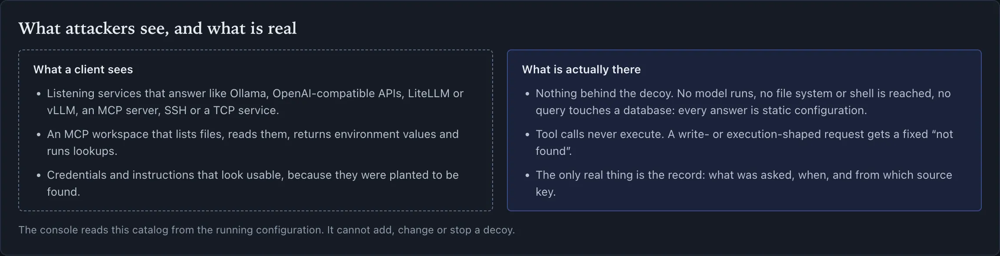
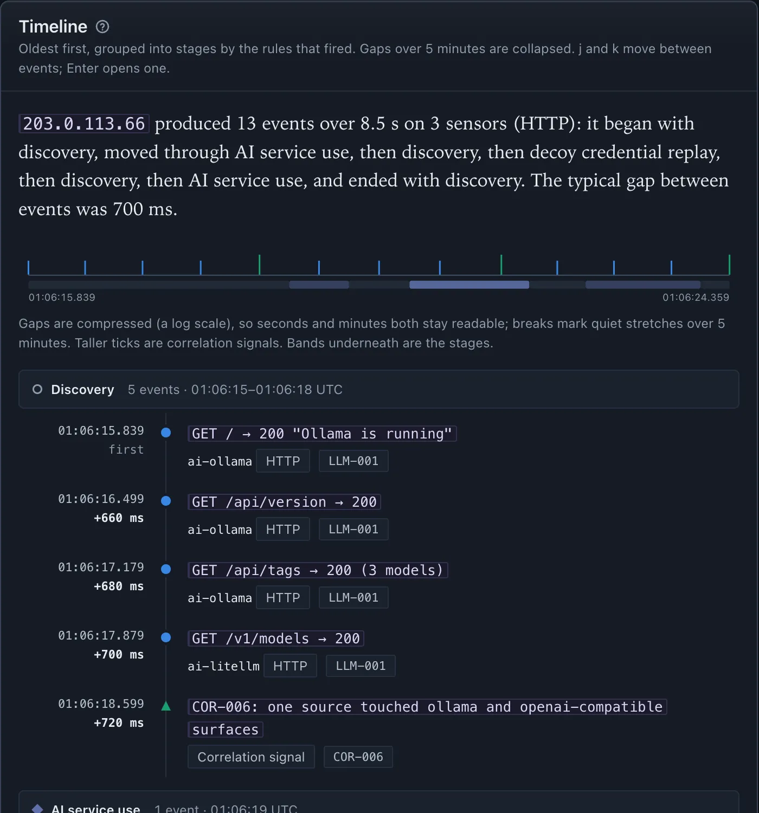
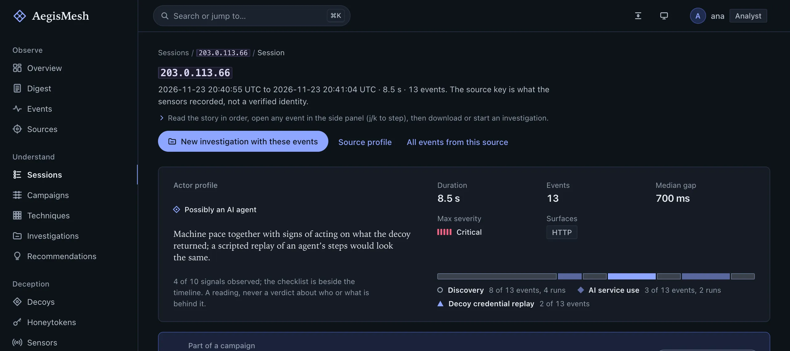
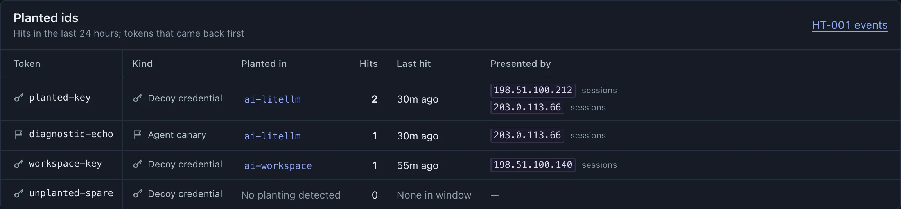
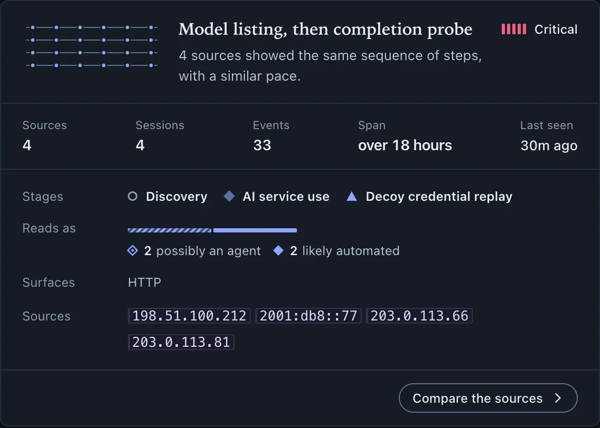
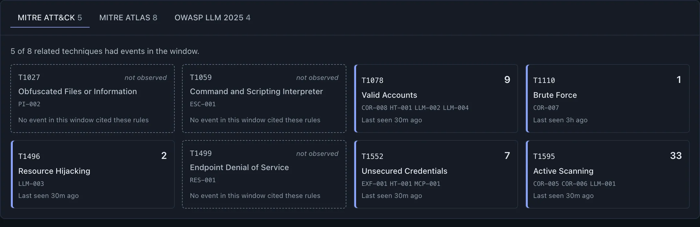
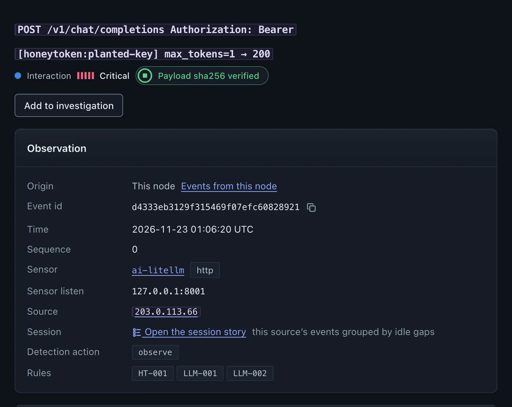
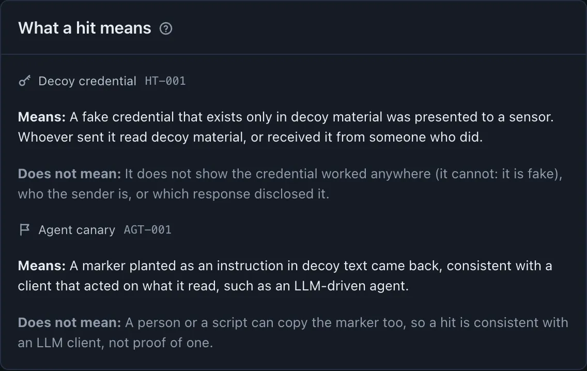

Answers like Ollama and OpenAI
Static Ollama, OpenAI-compatible, LiteLLM and vLLM shapes; no model runs behind them.

Version 0.2.0, an early release built from source
Fake Ollama, OpenAI-compatible, MCP, SSH and web endpoints run on your own machine. Every request becomes integrity-checked evidence, and the console tells each session as a story.

Events from one source become a session until it is quiet for 30 minutes. The console shows its stages, the gap before each event and which signals fit automation.
Read the console API
Static Ollama, OpenAI-compatible, LiteLLM and vLLM shapes; no model runs behind them.

A replayed key or a followed instruction is recorded by token id; the value never is.

Sources that ran the same eight redacted steps are grouped. Never proof of one operator.

Rules carry editorial framework references. The view counts what fired, never coverage.

What it never does
AegisMesh records what an attacker tried and stops there. It never runs what they send, never answers with anything real, and never blocks or changes a real system for you.
Each event is redacted, then stored in a versioned envelope with its own integrity hash. Attacker text is always shown as plain text, never rendered.


No. Recommendations are dry-run proposals for your review; nothing changes a real asset.
No. Events are observations. Deciding that one matters is a person’s call, recorded in an investigation.
No. An automation reading says the pace and the rules fit automation. A source key is not an identity.
Not by default: it runs offline on loopback. Webhooks and fleet forwarding are opt-in.
You need Go 1.27.4. Everything binds to 127.0.0.1 and talks to nothing else.
Clone the repository, then build one binary.
$ cd AegisMesh $ make build
A synthetic attack behind the console; its token prints once.
$ ./bin/aegismesh demo --console
AI API shapes and an MCP workspace, with fresh fake markers.
$ ./bin/aegismesh init \ --profile ai-decoy \ --dir ./ai-lab $ ./bin/aegismesh run \ --config ai-lab/mesh.yaml \ --dry-run